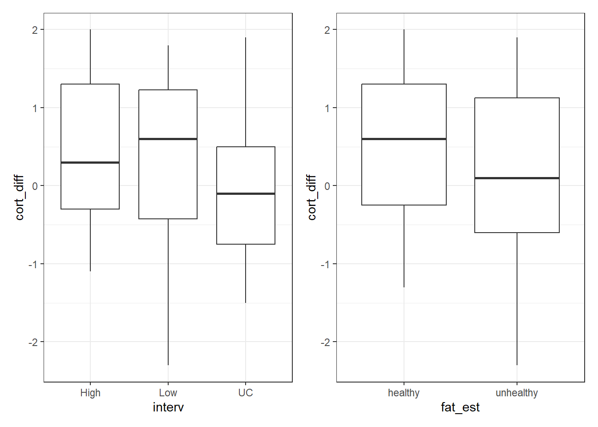

knitr::opts_chunk$set(comment = NA)
library(janitor)
library(broom)
library(ggridges)
library(glue)
library(gt)
library(mosaic)
library(patchwork)
library(tidyverse)
theme_set(theme_bw())10 Two-Way ANOVA and Interaction
10.1 R Setup Used Here
10.1.1 Data Load
bonding <- read_csv("data/bonding.csv", show_col_types = FALSE)
cortisol <- read_csv("data/cortisol.csv", show_col_types = FALSE) 10.2 The bonding data: A Designed Dental Experiment
The bonding data describe a designed experiment into the properties of four different resin types (resin = A, B, C, D) and two different curing light sources (light = Halogen, LED) as they relate to the resulting bonding strength (measured in MPa1) on the surface of teeth. The source is @Kim2014.
The experiment involved making measurements of bonding strength under a total of 80 experimental setups, or runs, with 10 runs completed at each of the eight combinations of a light source and a resin type. The data are gathered in the bonding.csv file.
bonding# A tibble: 80 × 4
runID light resin strength
<chr> <chr> <chr> <dbl>
1 R101 LED B 12.8
2 R102 Halogen B 22.2
3 R103 Halogen B 24.6
4 R104 LED A 17
5 R105 LED C 32.2
6 R106 Halogen B 27.1
7 R107 LED A 23.4
8 R108 Halogen A 23.5
9 R109 Halogen D 37.3
10 R110 Halogen A 19.7
# … with 70 more rows10.3 A One-Factor Analysis of Variance
Suppose we are interested in the distribution of the strength values for the four different types of resin.
bonding |> group_by(resin) |>
summarise(n = n(), mean(strength), median(strength))# A tibble: 4 × 4
resin n `mean(strength)` `median(strength)`
<chr> <int> <dbl> <dbl>
1 A 20 18.4 18.0
2 B 20 22.2 22.7
3 C 20 25.2 25.7
4 D 20 32.1 35.3I’d begin serious work with a plot.
10.3.1 Look at the Data!
ggplot(bonding, aes(x = resin, y = strength)) +
geom_violin(aes(fill = resin)) +
geom_boxplot(width = 0.2)Another good plot for this purpose is a ridgeline plot.
ggplot(bonding, aes(x = strength, y = resin, fill = resin)) +
geom_density_ridges2() +
guides(fill = "none")Picking joint bandwidth of 3.0910.3.2 Table of Summary Statistics
With the small size of this experiment (n = 20 for each resin type), graphical summaries may not perform as well as they often do. We’ll also produce a quick table of summary statistics for strength within each resin type.
favstats(strength ~ resin, data = bonding) resin min Q1 median Q3 max mean sd n missing
1 A 9.3 15.725 17.95 20.40 28.0 18.415 4.805948 20 0
2 B 11.8 18.450 22.70 25.75 35.2 22.230 6.748263 20 0
3 C 14.5 20.650 25.70 30.70 34.5 25.155 6.326425 20 0
4 D 17.3 21.825 35.30 40.15 47.2 32.075 9.735063 20 0Since the means and medians within each group are fairly close, and the distributions (with the possible exception of resin D) are reasonably well approximated by the Normal, I’ll fit an ANOVA model2.
anova(lm(strength ~ resin, data = bonding))Analysis of Variance Table
Response: strength
Df Sum Sq Mean Sq F value Pr(>F)
resin 3 1999.7 666.57 13.107 5.52e-07 ***
Residuals 76 3865.2 50.86
---
Signif. codes: 0 '***' 0.001 '**' 0.01 '*' 0.05 '.' 0.1 ' ' 1It appears that the resin types have a significant association with mean strength of the bonds. Can we identify which resin types have generally higher or lower strength?
t_bond <- TukeyHSD(aov(strength ~ resin, data = bonding),
ordered = TRUE, conf.level = 0.90)
tidy(t_bond) |>
select(-c(term, null.value)) |>
mutate(across(.cols = -contrast, num, digits = 3)) |>
arrange(desc(estimate)) |>
gt() |>
tab_header(title = "Comparing Mean Bond Strength across pairs of resin types",
subtitle = "90% Tukey HSD Confidence Intervals") |>
tab_footnote(footnote = glue(nrow(bonding), " teeth in bonding data"))| Comparing Mean Bond Strength across pairs of resin types | ||||
| 90% Tukey HSD Confidence Intervals | ||||
| contrast | estimate | conf.low | conf.high | adj.p.value |
|---|---|---|---|---|
| D-A | 13.660 | 8.403 | 18.917 | 0.000 |
| D-B | 9.845 | 4.588 | 15.102 | 0.000 |
| D-C | 6.920 | 1.663 | 12.177 | 0.015 |
| C-A | 6.740 | 1.483 | 11.997 | 0.019 |
| B-A | 3.815 | -1.442 | 9.072 | 0.335 |
| C-B | 2.925 | -2.332 | 8.182 | 0.568 |
| 80 teeth in bonding data | ||||
tidy(t_bond) |>
mutate(contrast = fct_reorder(contrast, estimate, .desc = TRUE)) %>%
ggplot(., aes(x = contrast, y = estimate, ymin = conf.low, ymax = conf.high)) +
geom_pointrange() +
geom_hline(yintercept = 0, col = "red", linetype = "dashed") +
geom_label(aes(label = round_half_up(estimate, 2))) +
labs(title = "Comparing Mean Bond Strength across pairs of resin types",
subtitle = "90% Tukey HSD Confidence intervals",
caption = glue(nrow(bonding), " teeth in bonding data"),
x = "Pairwise Difference between resin types",
y = "Difference in Mean Bond Strength")Based on these confidence intervals (which have a family-wise 90% confidence level), we see that D shows arger mean strength than A or B or C, and that C is also associated with larger mean strength than A.
10.4 A Two-Way ANOVA: Looking at Two Factors
Now, we’ll now add consideration of the light source into our study. We can look at the distribution of the strength values at the combinations of both light and resin, with a plot like this one.
ggplot(bonding, aes(x = resin, y = strength, color = light)) +
geom_point(size = 2, alpha = 0.5) +
facet_wrap(~ light) +
guides(color = "none") +
scale_color_manual(values = c("purple", "darkorange")) +
theme_bw() 10.5 A Means Plot (with standard deviations) to check for interaction
Sometimes, we’ll instead look at a plot simply of the means (and, often, the standard deviations) of strength at each combination of light and resin. We’ll start by building up a data set with the summaries we want to plot.
bond.sum <- bonding |>
group_by(resin, light) |>
summarize(mean.str = mean(strength), sd.str = sd(strength))`summarise()` has grouped output by 'resin'. You can override using the
`.groups` argument.bond.sum# A tibble: 8 × 4
# Groups: resin [4]
resin light mean.str sd.str
<chr> <chr> <dbl> <dbl>
1 A Halogen 17.8 4.02
2 A LED 19.1 5.63
3 B Halogen 19.9 5.62
4 B LED 24.6 7.25
5 C Halogen 22.5 6.19
6 C LED 27.8 5.56
7 D Halogen 40.3 4.15
8 D LED 23.8 5.70Now, we’ll use this new data set to plot the means and standard deviations of strength at each combination of resin and light.
## The error bars will overlap unless we adjust the position.
pd <- position_dodge(0.2) # move them .1 to the left and right
ggplot(bond.sum, aes(x = resin, y = mean.str, col = light)) +
geom_errorbar(aes(ymin = mean.str - sd.str,
ymax = mean.str + sd.str),
width = 0.2, position = pd) +
geom_point(size = 2, position = pd) +
geom_line(aes(group = light), position = pd) +
scale_color_manual(values = c("purple", "darkorange")) +
theme_bw() +
labs(y = "Bonding Strength (MPa)", x = "Resin Type",
title = "Observed Means (+/- SD) of Bonding Strength")Is there evidence of a meaningful interaction between the resin type and the light source on the bonding strength in this plot?
- Sure. A meaningful interaction just means that the strength associated with different
resintypes depends on thelightsource.- With LED
light, it appears thatresinC leads to the strongest bonding strength. - With Halogen
light, though, it seems thatresinD is substantially stronger.
- With LED
- Note that the lines we see here connecting the
lightsources aren’t in parallel (as they would be if we had zero interaction betweenresinandlight), but rather, they cross.
10.5.1 Summarizing the data after grouping by resin and light
We might want to look at a numerical summary of the strengths within these groups, too.
favstats(strength ~ resin + light, data = bonding) |>
select(resin.light, median, mean, sd, n, missing) resin.light median mean sd n missing
1 A.Halogen 18.35 17.77 4.024108 10 0
2 B.Halogen 21.75 19.90 5.617631 10 0
3 C.Halogen 21.30 22.54 6.191069 10 0
4 D.Halogen 40.40 40.30 4.147556 10 0
5 A.LED 17.80 19.06 5.625181 10 0
6 B.LED 24.45 24.56 7.246792 10 0
7 C.LED 28.45 27.77 5.564980 10 0
8 D.LED 21.45 23.85 5.704043 10 010.6 Fitting the Two-Way ANOVA model with Interaction
c3_m1 <- lm(strength ~ resin * light, data = bonding)
summary(c3_m1)
Call:
lm(formula = strength ~ resin * light, data = bonding)
Residuals:
Min 1Q Median 3Q Max
-11.760 -3.663 -0.320 3.697 11.250
Coefficients:
Estimate Std. Error t value Pr(>|t|)
(Intercept) 17.770 1.771 10.033 2.57e-15 ***
resinB 2.130 2.505 0.850 0.3979
resinC 4.770 2.505 1.904 0.0609 .
resinD 22.530 2.505 8.995 2.13e-13 ***
lightLED 1.290 2.505 0.515 0.6081
resinB:lightLED 3.370 3.542 0.951 0.3446
resinC:lightLED 3.940 3.542 1.112 0.2697
resinD:lightLED -17.740 3.542 -5.008 3.78e-06 ***
---
Signif. codes: 0 '***' 0.001 '**' 0.01 '*' 0.05 '.' 0.1 ' ' 1
Residual standard error: 5.601 on 72 degrees of freedom
Multiple R-squared: 0.6149, Adjusted R-squared: 0.5775
F-statistic: 16.42 on 7 and 72 DF, p-value: 9.801e-1310.6.1 The ANOVA table for our model
In a two-way ANOVA model, we begin by assessing the interaction term. If it’s important, then our best model is the model including the interaction. If it’s not important, we will often move on to consider a new model, fit without an interaction.
The ANOVA table is especially helpful in this case, because it lets us look specifically at the interaction effect.
anova(c3_m1)Analysis of Variance Table
Response: strength
Df Sum Sq Mean Sq F value Pr(>F)
resin 3 1999.72 666.57 21.2499 5.792e-10 ***
light 1 34.72 34.72 1.1067 0.2963
resin:light 3 1571.96 523.99 16.7043 2.457e-08 ***
Residuals 72 2258.52 31.37
---
Signif. codes: 0 '***' 0.001 '**' 0.01 '*' 0.05 '.' 0.1 ' ' 110.6.2 Is the interaction important?
In this case, the interaction:
- is evident in the means plot, and
- is highly statistically significant, and
- accounts for a sizable fraction (27%) of the overall variation
\[ \eta^2_{interaction} = \frac{\mbox{SS(resin:light)}}{SS(Total)} = \frac{1571.96}{1999.72 + 34.72 + 1571.96 + 2258.52} = 0.268 \]
If the interaction were either large or significant we would be inclined to keep it in the model. In this case, it’s both, so there’s no real reason to remove it.
10.6.3 Interpreting the Interaction
Recall the model equation, which is:
c3_m1
Call:
lm(formula = strength ~ resin * light, data = bonding)
Coefficients:
(Intercept) resinB resinC resinD
17.77 2.13 4.77 22.53
lightLED resinB:lightLED resinC:lightLED resinD:lightLED
1.29 3.37 3.94 -17.74 So, if light = Halogen, our equation is:
\[ strength = 17.77 + 2.13 resinB + 4.77 resinC + 22.53 resinD \]
And if light = LED, our equation is:
\[ strength = 19.06 + 5.50 resinB + 8.71 resinC + 4.79 resinD \]
Note that both the intercept and the slopes change as a result of the interaction. The model yields a different prediction for every possible combination of a resin type and a light source.
10.7 Comparing Individual Combinations of resin and light
To make comparisons between individual combinations of a resin type and a light source, using something like Tukey’s HSD approach for multiple comparisons, we first refit the model using the aov structure, rather than lm.
c3m1_aov <- aov(strength ~ resin * light, data = bonding)
summary(c3m1_aov) Df Sum Sq Mean Sq F value Pr(>F)
resin 3 1999.7 666.6 21.250 5.79e-10 ***
light 1 34.7 34.7 1.107 0.296
resin:light 3 1572.0 524.0 16.704 2.46e-08 ***
Residuals 72 2258.5 31.4
---
Signif. codes: 0 '***' 0.001 '**' 0.01 '*' 0.05 '.' 0.1 ' ' 1And now, we can obtain Tukey HSD comparisons (which will maintain an overall 90% family-wise confidence level) across the resin types, the light sources, and the combinations, with the TukeyHSD command. This approach is only completely appropriate if these comparisons are pre-planned, and if the design is balanced (as this is, with the same sample size for each combination of a light source and resin type.)
TukeyHSD(c3m1_aov, conf.level = 0.9) Tukey multiple comparisons of means
90% family-wise confidence level
Fit: aov(formula = strength ~ resin * light, data = bonding)
$resin
diff lwr upr p adj
B-A 3.815 -0.3176052 7.947605 0.1461960
C-A 6.740 2.6073948 10.872605 0.0016436
D-A 13.660 9.5273948 17.792605 0.0000000
C-B 2.925 -1.2076052 7.057605 0.3568373
D-B 9.845 5.7123948 13.977605 0.0000026
D-C 6.920 2.7873948 11.052605 0.0011731
$light
diff lwr upr p adj
LED-Halogen -1.3175 -3.404306 0.7693065 0.2963128
$`resin:light`
diff lwr upr p adj
B:Halogen-A:Halogen 2.13 -4.9961962 9.256196 0.9893515
C:Halogen-A:Halogen 4.77 -2.3561962 11.896196 0.5525230
D:Halogen-A:Halogen 22.53 15.4038038 29.656196 0.0000000
A:LED-A:Halogen 1.29 -5.8361962 8.416196 0.9995485
B:LED-A:Halogen 6.79 -0.3361962 13.916196 0.1361092
C:LED-A:Halogen 10.00 2.8738038 17.126196 0.0037074
D:LED-A:Halogen 6.08 -1.0461962 13.206196 0.2443200
C:Halogen-B:Halogen 2.64 -4.4861962 9.766196 0.9640100
D:Halogen-B:Halogen 20.40 13.2738038 27.526196 0.0000000
A:LED-B:Halogen -0.84 -7.9661962 6.286196 0.9999747
B:LED-B:Halogen 4.66 -2.4661962 11.786196 0.5818695
C:LED-B:Halogen 7.87 0.7438038 14.996196 0.0473914
D:LED-B:Halogen 3.95 -3.1761962 11.076196 0.7621860
D:Halogen-C:Halogen 17.76 10.6338038 24.886196 0.0000000
A:LED-C:Halogen -3.48 -10.6061962 3.646196 0.8591455
B:LED-C:Halogen 2.02 -5.1061962 9.146196 0.9922412
C:LED-C:Halogen 5.23 -1.8961962 12.356196 0.4323859
D:LED-C:Halogen 1.31 -5.8161962 8.436196 0.9995004
A:LED-D:Halogen -21.24 -28.3661962 -14.113804 0.0000000
B:LED-D:Halogen -15.74 -22.8661962 -8.613804 0.0000006
C:LED-D:Halogen -12.53 -19.6561962 -5.403804 0.0001014
D:LED-D:Halogen -16.45 -23.5761962 -9.323804 0.0000002
B:LED-A:LED 5.50 -1.6261962 12.626196 0.3665620
C:LED-A:LED 8.71 1.5838038 15.836196 0.0185285
D:LED-A:LED 4.79 -2.3361962 11.916196 0.5471915
C:LED-B:LED 3.21 -3.9161962 10.336196 0.9027236
D:LED-B:LED -0.71 -7.8361962 6.416196 0.9999920
D:LED-C:LED -3.92 -11.0461962 3.206196 0.7690762One conclusion from this is that the combination of D and Halogen appears stronger than each of the other seven combinations.
10.8 The bonding model without Interaction
It seems incorrect in this situation to fit a model without the interaction term, but we’ll do so just so you can see what’s involved.
c3_m2 <- lm(strength ~ resin + light, data = bonding)
summary(c3_m2)
Call:
lm(formula = strength ~ resin + light, data = bonding)
Residuals:
Min 1Q Median 3Q Max
-14.1163 -4.9531 0.1187 4.4613 14.4663
Coefficients:
Estimate Std. Error t value Pr(>|t|)
(Intercept) 19.074 1.787 10.676 < 2e-16 ***
resinB 3.815 2.260 1.688 0.09555 .
resinC 6.740 2.260 2.982 0.00386 **
resinD 13.660 2.260 6.044 5.39e-08 ***
lightLED -1.317 1.598 -0.824 0.41229
---
Signif. codes: 0 '***' 0.001 '**' 0.01 '*' 0.05 '.' 0.1 ' ' 1
Residual standard error: 7.147 on 75 degrees of freedom
Multiple R-squared: 0.3469, Adjusted R-squared: 0.312
F-statistic: 9.958 on 4 and 75 DF, p-value: 1.616e-06In the no-interaction model, if light = Halogen, our equation is:
\[ strength = 19.07 + 3.82 resinB + 6.74 resinC + 13.66 resinD \]
And if light = LED, our equation is:
\[ strength = 17.75 + 3.82 resinB + 6.74 resinC + 13.66 resinD \]
So, in the no-interaction model, only the intercept changes.
anova(c3_m2)Analysis of Variance Table
Response: strength
Df Sum Sq Mean Sq F value Pr(>F)
resin 3 1999.7 666.57 13.0514 6.036e-07 ***
light 1 34.7 34.72 0.6797 0.4123
Residuals 75 3830.5 51.07
---
Signif. codes: 0 '***' 0.001 '**' 0.01 '*' 0.05 '.' 0.1 ' ' 1And, it appears, if we ignore the interaction, then resin type has a large impact on strength but light source doesn’t. This is clearer when we look at boxplots of the separated light and resin groups.
p1 <- ggplot(bonding, aes(x = light, y = strength)) +
geom_boxplot()
p2 <- ggplot(bonding, aes(x = resin, y = strength)) +
geom_boxplot()
p1 + p210.9 cortisol: A Hypothetical Clinical Trial
156 adults who complained of problems with a high-stress lifestyle were enrolled in a hypothetical clinical trial of the effectiveness of a behavioral intervention designed to help reduce stress levels, as measured by salivary cortisol.
The subjects were randomly assigned to one of three intervention groups (usual care, low dose, and high dose.) The “low dose” subjects received a one-week intervention with a follow-up at week 5. The “high dose” subjects received a more intensive three-week intervention, with follow up at week 5.
Since cortisol levels rise and fall with circadian rhythms, the cortisol measurements were taken just after rising for all subjects. These measurements were taken at baseline, and again at five weeks. The difference (baseline - week 5) in cortisol level (in micrograms / l) serves as the primary outcome.
10.9.1 Codebook and Raw Data for cortisol
The data are gathered in the cortisol data set. Included are:
| Variable | Description |
|---|---|
subject |
subject identification code |
interv |
intervention group (UC = usual care, Low, High) |
waist |
waist circumference at baseline (in inches) |
sex |
male or female |
cort.1 |
salivary cortisol level (microg/l) week 1 |
cort.5 |
salivary cortisol level (microg/l) week 5 |
cortisol# A tibble: 156 × 6
subject interv waist sex cort.1 cort.5
<chr> <chr> <dbl> <chr> <dbl> <dbl>
1 S1001 UC 48.3 M 13.4 13.3
2 S1002 Low 58.3 M 17.8 16.6
3 S1003 High 43 M 14.4 12.7
4 S1004 Low 44.9 M 9 9.8
5 S1005 High 46.1 M 14.2 14.2
6 S1006 UC 41.3 M 14.8 15.1
7 S1007 Low 51 F 13.7 16
8 S1008 UC 42 F 17.3 18.7
9 S1009 Low 24.7 F 15.3 15.8
10 S1010 Low 59.4 M 12.4 11.7
# … with 146 more rows10.10 Creating a factor combining sex and waist
Next, we’ll put the waist and sex data in the cortisol example together. We want to build a second categorical variable (called fat_est) combining this information, to indicate “healthy” vs. “unhealthy” levels of fat around the waist.
- Male subjects whose waist circumference is 40 inches or more, and
- Female subjects whose waist circumference is 35 inches or more, will fall in the “unhealthy” group.
cortisol <- cortisol |>
mutate(
fat_est = factor(case_when(
sex == "M" & waist >= 40 ~ "unhealthy",
sex == "F" & waist >= 35 ~ "unhealthy",
TRUE ~ "healthy")),
cort_diff = cort.1 - cort.5)
summary(cortisol) subject interv waist sex
Length:156 Length:156 Min. :20.80 Length:156
Class :character Class :character 1st Qu.:33.27 Class :character
Mode :character Mode :character Median :40.35 Mode :character
Mean :40.42
3rd Qu.:47.77
Max. :59.90
cort.1 cort.5 fat_est cort_diff
Min. : 6.000 Min. : 4.2 healthy : 56 Min. :-2.3000
1st Qu.: 9.675 1st Qu.: 9.6 unhealthy:100 1st Qu.:-0.5000
Median :12.400 Median :12.6 Median : 0.2000
Mean :12.686 Mean :12.4 Mean : 0.2821
3rd Qu.:16.025 3rd Qu.:15.7 3rd Qu.: 1.2000
Max. :19.000 Max. :19.7 Max. : 2.0000 10.11 A Means Plot for the cortisol trial (with standard errors)
Again, we’ll start by building up a data set with the summaries we want to plot.
cort.sum <- cortisol |>
group_by(interv, fat_est) |>
summarize(mean.cort = mean(cort_diff),
se.cort = sd(cort_diff)/sqrt(n()))`summarise()` has grouped output by 'interv'. You can override using the
`.groups` argument.cort.sum# A tibble: 6 × 4
# Groups: interv [3]
interv fat_est mean.cort se.cort
<chr> <fct> <dbl> <dbl>
1 High healthy 0.695 0.217
2 High unhealthy 0.352 0.150
3 Low healthy 0.5 0.182
4 Low unhealthy 0.327 0.190
5 UC healthy 0.347 0.225
6 UC unhealthy -0.226 0.155Now, we’ll use this new data set to plot the means and standard errors.
## The error bars will overlap unless we adjust the position.
pd <- position_dodge(0.2) # move them .1 to the left and right
ggplot(cort.sum, aes(x = interv, y = mean.cort, col = fat_est)) +
geom_errorbar(aes(ymin = mean.cort - se.cort,
ymax = mean.cort + se.cort),
width = 0.2, position = pd) +
geom_point(size = 2, position = pd) +
geom_line(aes(group = fat_est), position = pd) +
scale_color_manual(values = c("royalblue", "darkred")) +
theme_bw() +
labs(y = "Salivary Cortisol Level", x = "Intervention Group",
title = "Observed Means (+/- SE) of Salivary Cortisol")10.12 A Two-Way ANOVA model for cortisol with Interaction
c3_m3 <- lm(cort_diff ~ interv * fat_est, data = cortisol)
anova(c3_m3)Analysis of Variance Table
Response: cort_diff
Df Sum Sq Mean Sq F value Pr(>F)
interv 2 7.847 3.9235 4.4698 0.01301 *
fat_est 1 4.614 4.6139 5.2564 0.02326 *
interv:fat_est 2 0.943 0.4715 0.5371 0.58554
Residuals 150 131.666 0.8778
---
Signif. codes: 0 '***' 0.001 '**' 0.01 '*' 0.05 '.' 0.1 ' ' 1Does it seem like we need the interaction term in this case?
summary(c3_m3)
Call:
lm(formula = cort_diff ~ interv * fat_est, data = cortisol)
Residuals:
Min 1Q Median 3Q Max
-2.62727 -0.75702 0.08636 0.84848 2.12647
Coefficients:
Estimate Std. Error t value Pr(>|t|)
(Intercept) 0.6950 0.2095 3.317 0.00114 **
intervLow -0.1950 0.3001 -0.650 0.51689
intervUC -0.3479 0.3091 -1.126 0.26206
fat_estunhealthy -0.3435 0.2655 -1.294 0.19774
intervLow:fat_estunhealthy 0.1708 0.3785 0.451 0.65256
intervUC:fat_estunhealthy -0.2300 0.3846 -0.598 0.55068
---
Signif. codes: 0 '***' 0.001 '**' 0.01 '*' 0.05 '.' 0.1 ' ' 1
Residual standard error: 0.9369 on 150 degrees of freedom
Multiple R-squared: 0.0924, Adjusted R-squared: 0.06214
F-statistic: 3.054 on 5 and 150 DF, p-value: 0.0117910.12.1 Notes on this Question
When we’re evaluating a two-factor ANOVA model with an interaction, we are choosing between models with either:
- just one factor
- both factors, but only as main effects
- both factors and an interaction between them
But we don’t get to pick models that include any other combination of terms. For this two-way ANOVA, then, our choices are:
- a model with `interv only
- a model with `fat_est only
- a model with both
intervandfat_estbut not their interaction - a model with
intervandfat_estand their interaction
Those are the only modeling options available to us.
First, consider the ANOVA table, repeated below…
anova(c3_m3)Analysis of Variance Table
Response: cort_diff
Df Sum Sq Mean Sq F value Pr(>F)
interv 2 7.847 3.9235 4.4698 0.01301 *
fat_est 1 4.614 4.6139 5.2564 0.02326 *
interv:fat_est 2 0.943 0.4715 0.5371 0.58554
Residuals 150 131.666 0.8778
---
Signif. codes: 0 '***' 0.001 '**' 0.01 '*' 0.05 '.' 0.1 ' ' 1The conclusions here are as follows:
The interaction effect (
interv:fat_est) has a large p value (0.58554) and assesses whether the two interaction terms (product terms) included in the model add detectable predictive value to the main effects model that includes only interv and fat_est alone. You are right to say that this ANOVA is sequential, which means that the p value for the interaction effect is looking at the additional effect of the interaction once we already have the main effects interv and fat_est included.The
intervandfat_estterms aren’t usually evaluated with hypothesis tests or interpreted in the ANOVA for this setting, since if we intend to include the interaction term (as this model does) we also need these main effects. If we wanted to look at those terms individually in a model without the interaction, then we’d want to fit that model (without the interaction term) to do so.
Next, let’s look at the summary of the c3_m3 model, specifically the coefficients…
summary(c3_m3)
Call:
lm(formula = cort_diff ~ interv * fat_est, data = cortisol)
Residuals:
Min 1Q Median 3Q Max
-2.62727 -0.75702 0.08636 0.84848 2.12647
Coefficients:
Estimate Std. Error t value Pr(>|t|)
(Intercept) 0.6950 0.2095 3.317 0.00114 **
intervLow -0.1950 0.3001 -0.650 0.51689
intervUC -0.3479 0.3091 -1.126 0.26206
fat_estunhealthy -0.3435 0.2655 -1.294 0.19774
intervLow:fat_estunhealthy 0.1708 0.3785 0.451 0.65256
intervUC:fat_estunhealthy -0.2300 0.3846 -0.598 0.55068
---
Signif. codes: 0 '***' 0.001 '**' 0.01 '*' 0.05 '.' 0.1 ' ' 1
Residual standard error: 0.9369 on 150 degrees of freedom
Multiple R-squared: 0.0924, Adjusted R-squared: 0.06214
F-statistic: 3.054 on 5 and 150 DF, p-value: 0.01179So here, we see two p values associated with the interaction terms (the two product terms at the bottom of the regression) but these aren’t especially helpful, because we’re either going to include the interaction (in which case both of these terms will be in the model) or we’re not going to include the interaction (in which case neither of these terms will be in the model.)
So the p values provided here aren’t very helpful - like all such p values for t tests, they are looking at the value of the term in their row as the last predictor in to the model, essentially comparing the full model to the model without that specific component, but none of those tests enable us to decide which of the 4 available model choices is our best fit.
Now, let’s consider the reason why, for example, the p value for fat_est in the summary() which is looking at comparing the following models …
- a model including interv (which has 2 coefficients to account for its 3 categories),
fat_est(which has 1 coefficient to account for its 2 categories), and theinterv*fat_estinteraction terms (which are 2 terms) - a model including
intervand theinterv*fat_estinteraction (but somehow not the main effect offat_est, which actually makes no sense: if we include the interaction we always include the main effect)
to the p value for fat_est in the ANOVA which is looking at comparing
- the model with
intervalone to - the model with
intervandfat_estas main effects, but no interaction
Only the ANOVA p value is therefore in any way useful, and it suggests that once you have the main effect of interv, adding fat_est’s main effect adds statistically detectable value (p = 0.023)
10.13 A Two-Way ANOVA model for cortisol without Interaction
10.13.1 The Graph
p1 <- ggplot(cortisol, aes(x = interv, y = cort_diff)) +
geom_boxplot()
p2 <- ggplot(cortisol, aes(x = fat_est, y = cort_diff)) +
geom_boxplot()
p1 + p2
10.13.2 The ANOVA Model
c3_m4 <- lm(cort_diff ~ interv + fat_est, data = cortisol)
anova(c3_m4)Analysis of Variance Table
Response: cort_diff
Df Sum Sq Mean Sq F value Pr(>F)
interv 2 7.847 3.9235 4.4972 0.01266 *
fat_est 1 4.614 4.6139 5.2886 0.02283 *
Residuals 152 132.609 0.8724
---
Signif. codes: 0 '***' 0.001 '**' 0.01 '*' 0.05 '.' 0.1 ' ' 1How do these results compare to those we saw in the model with interaction?
10.13.3 The Regression Summary
summary(c3_m4)
Call:
lm(formula = cort_diff ~ interv + fat_est, data = cortisol)
Residuals:
Min 1Q Median 3Q Max
-2.55929 -0.74527 0.05457 0.86456 2.05489
Coefficients:
Estimate Std. Error t value Pr(>|t|)
(Intercept) 0.70452 0.16093 4.378 2.22e-05 ***
intervLow -0.08645 0.18232 -0.474 0.63606
intervUC -0.50063 0.18334 -2.731 0.00707 **
fat_estunhealthy -0.35878 0.15601 -2.300 0.02283 *
---
Signif. codes: 0 '***' 0.001 '**' 0.01 '*' 0.05 '.' 0.1 ' ' 1
Residual standard error: 0.934 on 152 degrees of freedom
Multiple R-squared: 0.0859, Adjusted R-squared: 0.06785
F-statistic: 4.761 on 3 and 152 DF, p-value: 0.0033510.13.4 Tukey HSD Comparisons
Without the interaction term, we can make direct comparisons between levels of the intervention, and between levels of the fat_est variable. This is probably best done here in a Tukey HSD comparison.
TukeyHSD(aov(cort_diff ~ interv + fat_est, data = cortisol), conf.level = 0.9) Tukey multiple comparisons of means
90% family-wise confidence level
Fit: aov(formula = cort_diff ~ interv + fat_est, data = cortisol)
$interv
diff lwr upr p adj
Low-High -0.09074746 -0.4677566 0.28626166 0.8724916
UC-High -0.51642619 -0.8952964 -0.13755598 0.0150150
UC-Low -0.42567873 -0.8063312 -0.04502625 0.0570728
$fat_est
diff lwr upr p adj
unhealthy-healthy -0.3582443 -0.6162415 -0.100247 0.0229266What conclusions can we draw here?